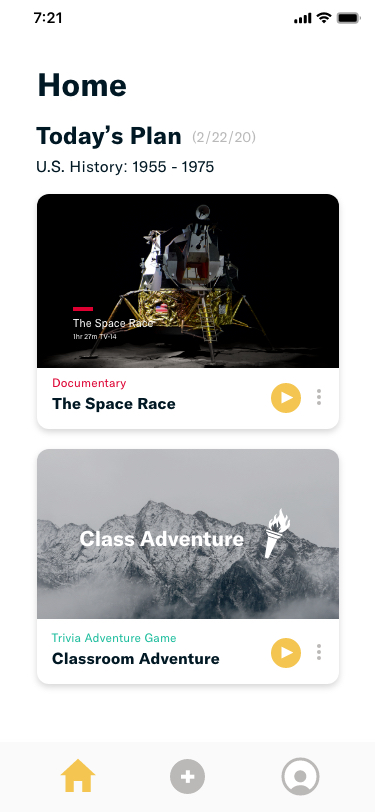
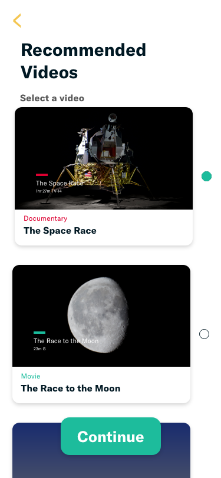
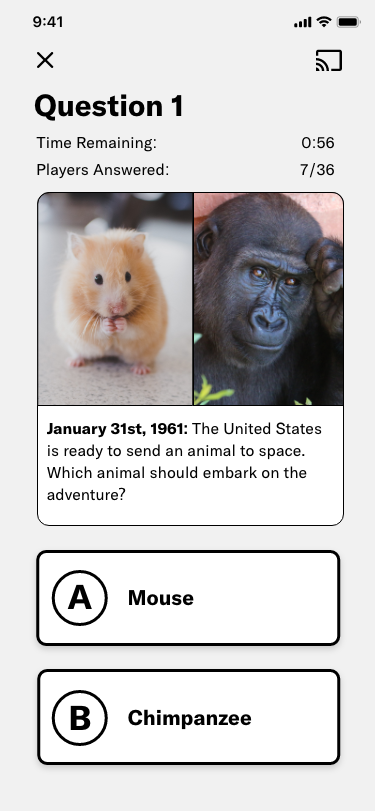
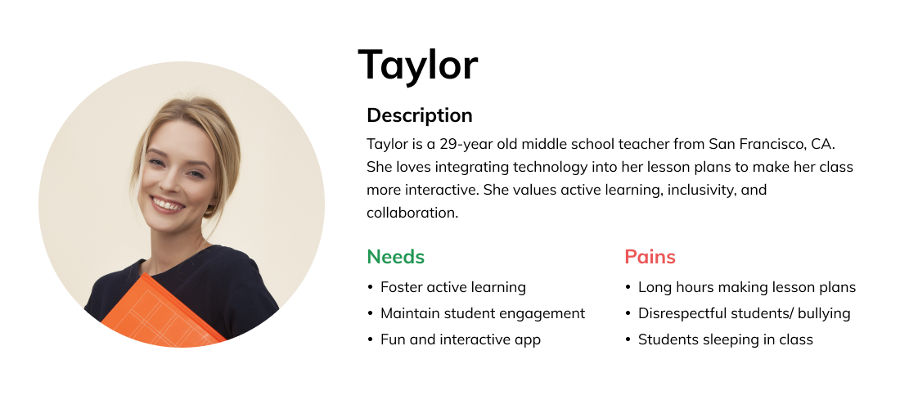
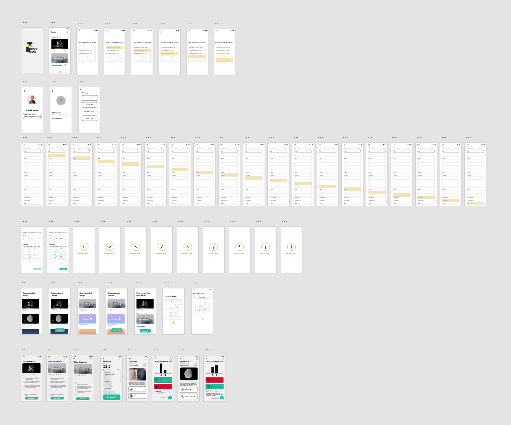

HistoBox
Ryan Untalan
Feb. 24, 2020 · 3 min
Overview
Project Description: Based on the 2012 Gallup Student Poll
survey, student engagement is dropping each school year. HistoBox is a
tool designed to assist middle school teachers to college professors
in creating an engaging and interactive lesson plan.
Role: Product Designer and UX Researcher
Tools: AdobeXD
Time Duration: 3 days
Project Context
Adobe and HISTORY hosted a 3-day national design competition called
Adobe Creative Jam LIVE. I worked with two designers, Tyler Matsuzaki and Emily Pi, on
creating a solution to the design challenge.
Design Challenge
Use HISTORY’s deep catalog of video and editorial content to create a
teaching and learning experience, ultimately resulting in a HISTORY
Classroom app. The conceptual mobile app you create will result in a
teaching tool for K-12 teachers OR a research tool for students at any
level.
Design Response
Create lesson plans and interactive games based on HISTORY’s video
resources.
HistoBox is a tool designed to assist middle school teachers to
college professors in creating an engaging and interactive lesson
plan. Our app integrates HISTORY’s extensive video resources and
provides interactive games to not only help students learn lessons
based on state-specific teaching standards but also create an
enjoyable classroom experience.
Results
We placed first at our school and had the opportunity to represent Cal
Poly SLO in the national competition finale. We placed in the top 5
amongst a pool of 55 teams.
Create and customize lesson plans

Access HISTORY’s deep catalog of video content

Engage with interactive classroom games

How was it made?
The Design Process
User Interviews
I interviewed teachers to learn about their experience with creating
lesson plans. Two key insights that we gained:
1. Ensure that lesson plans align with common core standards
2. Lesson plans should maintain student engagement and encourage participation
2. Lesson plans should maintain student engagement and encourage participation
Online Research
I explored the internet to find more information on some of the
challenges teachers may face while teaching history. One interesting
statistic I found was about how student engagement drops each school
year.
"8 in 10 elementary students who participated in the poll are engaged
with school. By middle school that falls to about 6 in 10 students.
And by high school, only 4 in 10 students qualify as engaged (Gallup
Student Polls, 2012)."
Persona

Problem Statement
With student engagement dropping each school year, how can we design a
tool for middle school to college teachers that assists them in creating
an engaging and interactive history lesson plan?
Brainstorm
To begin, we engaged in a BrainWriting exercise to generate key app
features.
Prioritization Matrix
After generating an extensive list of feature ideas, we then used a
prioritization matrix to determine which ideas were both highly valuable
to the user and highly feasible. Based on our discussion, we wanted to
create an app that included these features:
1. Create lesson plans (based on teaching standards)
2. Recommend HISTORY videos
3. Provide interactive classroom games
2. Recommend HISTORY videos
3. Provide interactive classroom games
Product Sitemap
To structure our application, we created a product sitemap that would
include our key features.

Wireframing
My team and I then engaged in many iterations of low fidelity
wireframing.

Prototyping
After developing a vision with wireframes, we dived into AdobeXD to
prototype our app. During prototyping, we followed the design guidelines
provided by HISTORY. I worked mainly on the home, create a lesson plan, and recommended content screens.

Reflection
One key takeaway is the value of understanding the people you’re designing for. During a 3 day design sprint, it can be very easy to rush into prototyping. However, my team and I took the time to learn more about teachers and the challenges they face while creating lesson plans. With a solid foundation of research and problem comprehension, our team was able to design a solution to help teachers and improve the classroom experience.
Thank you for reading!